For many years, I have thought about doing a designer tie. Ties are interesting because they are worn predominantly in formal or business settings. Yet the tie is an item of business attire which has personality. Soft tangail borders, with their refined, understated, luxurious look are perfect for a premium tie.
Even though the basic design has been in my mind for years, I never seemed able to find the time to execute the idea. Last year, as we were finishing our flamboyant Vagabond Menswear, it finally felt like the right time, and I managed to manifest this arty neckwear.
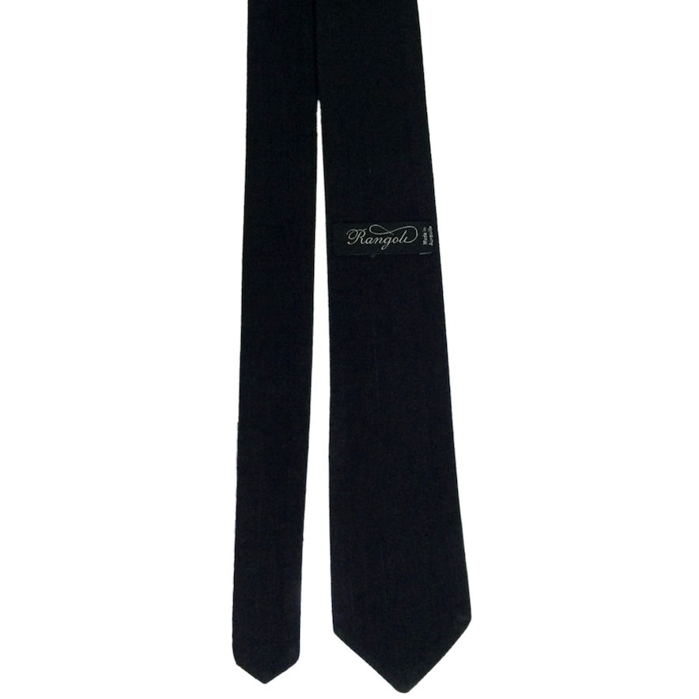
For the body of the tie, I used two layers of a textured khadi cotton. Each tie has a black back, and a coloured front. The black khadi is a pure shade, but all the other colours are blends.
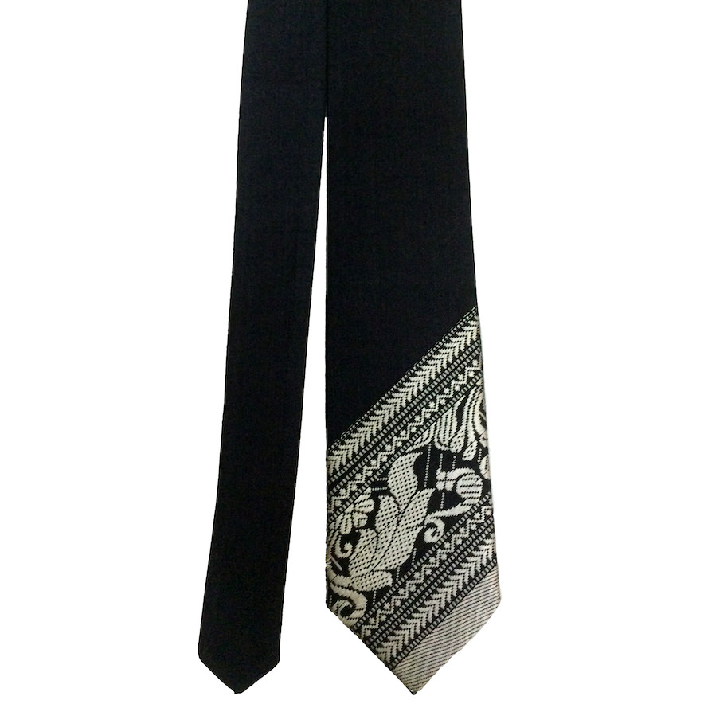
Two different hues of homespun yarn are hand-loomed together, yielding a cloth with a two-tone colour. The rustic appearance of this fabric lends the tie an air of roughshod elegance.
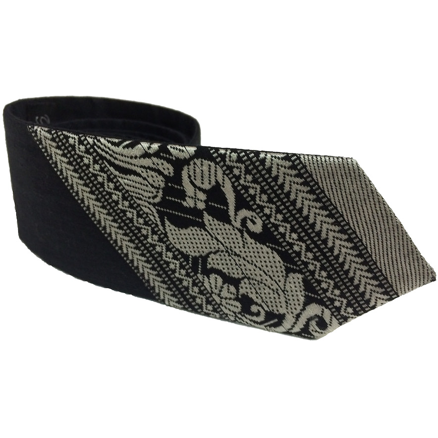
To this base, I added the sophisticated sensuality of a soft tangail border. For each base, I picked a border that would harmonize with the two-tone khadi colour. Some of these borders are from my Tangail Treasure Trove of impossible-to-find borders.
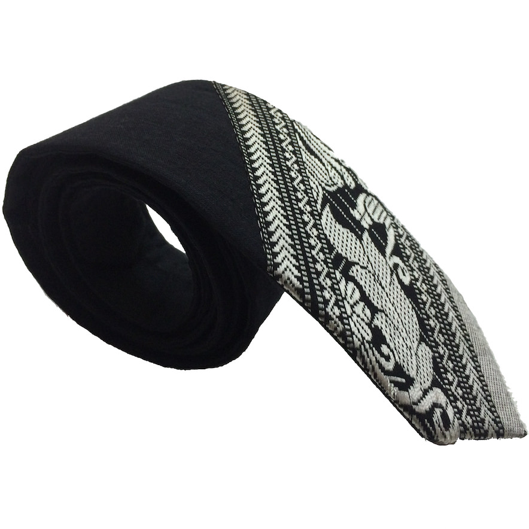
The others borders are custom, designed by me in collaboration with the artisanal Tangail weavers, and hand-loomed by them exclusively for Rangoli. Some are hand-spun cotton, others are silk, all are exquisite!
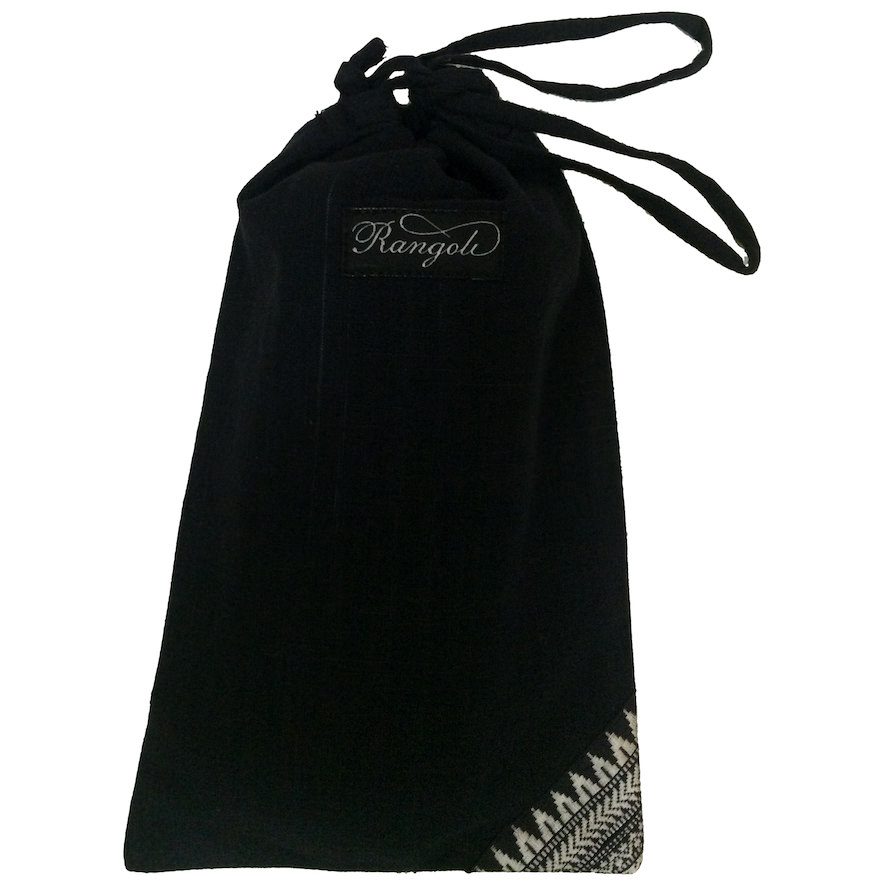
I was so pleased with the result that I was inspired to make a matching bag using the same fabric and border.
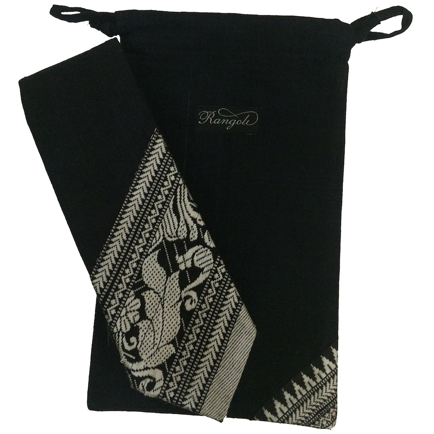
It makes a great gift bag to present the tie!
All of the ties can be worn with neutral coloured suits for business wear. The black and grey can be worn for formal occasions, and the coloured ones with a coordinated evening jacket for a night out, or even with just a shirt and jeans.
I designed many combinations, some of which could only be made in limited quantities, due to the scarcity of the border. At the moment, we have 6 ties available
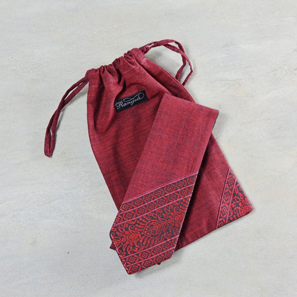
The body is a two-tone Red & Black khadi. The impossible-to-find 7.5 cm. wide border has floral and sacred geometry motifs in Black on a Red tangail fabric.
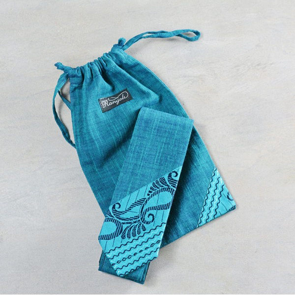
The body is a two-tone Blue & Black khadi. The impossible-to-find 7.5 cm wide border has mango and paisley motifs in Black on a Blue tangail fabric.
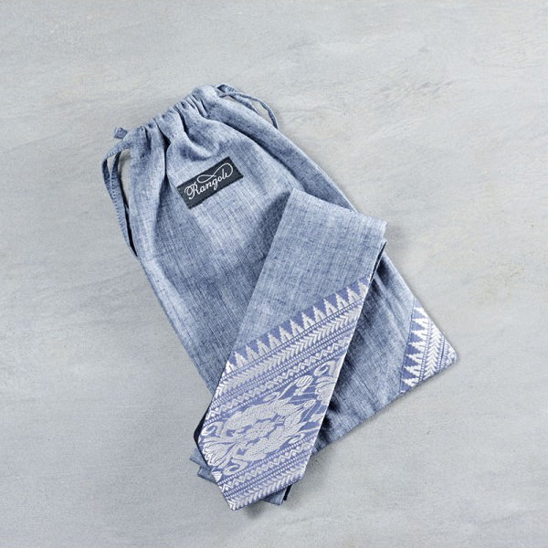
The body is a two-tone Denim & Bone khadi. The 8 cm wide silk border is custom-woven for Rangoli with herringbone, mountain and paisley motifs in Silver on a Steel tangail fabric.
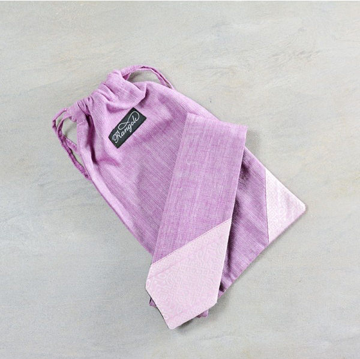
The body is a two-tone Old-Rose & Bone khadi. The impossible-to-find 6 cm. wide border has floral motifs in White on a Rose tangail fabric.
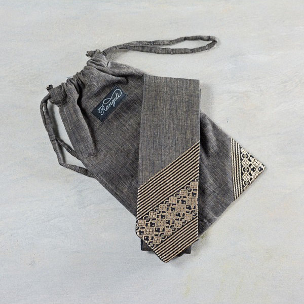
The body is a two-tone Grey & Beige khadi. The 8 cm. wide silk border is custom woven for Rangoli with sacred geometry and stripes in Old-Gold on a Black tangail fabric.
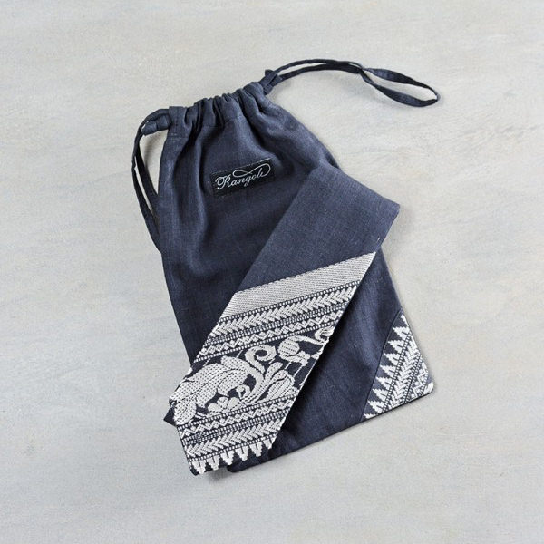
The body is a Black khadi. The 9 cm. wide silk border is custom-woven for Rangoli with herringbone, mountain, flower and paisley motifs in Silver on a Black tangail fabric.
Prema Florence Isaac
The tie is 140 cm. long, and varies in width from 3 cm. to 6 cm. The gift bag is 13 cm. x 23 cm.